Fieldwork and Laboratory Activities
Examples of activities related to molecular epidemiology research and laboratory diagnostics in swine health.
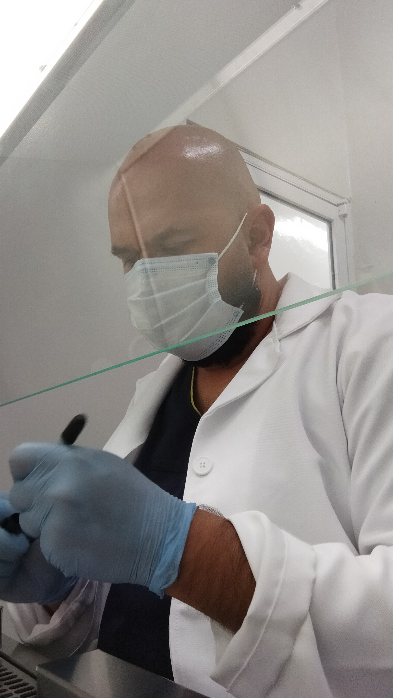
Molecular epidemiology research activities.
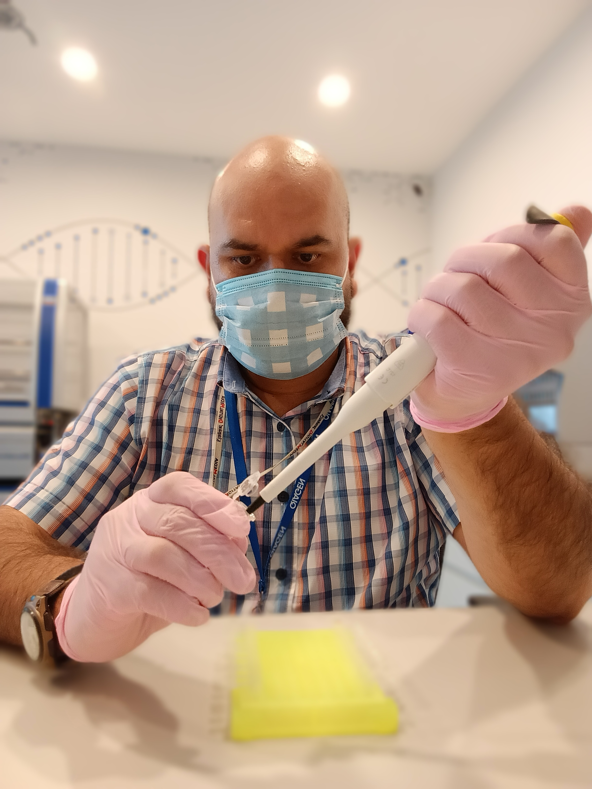
Laboratory processing and analysis for PRRS by digital PCR.
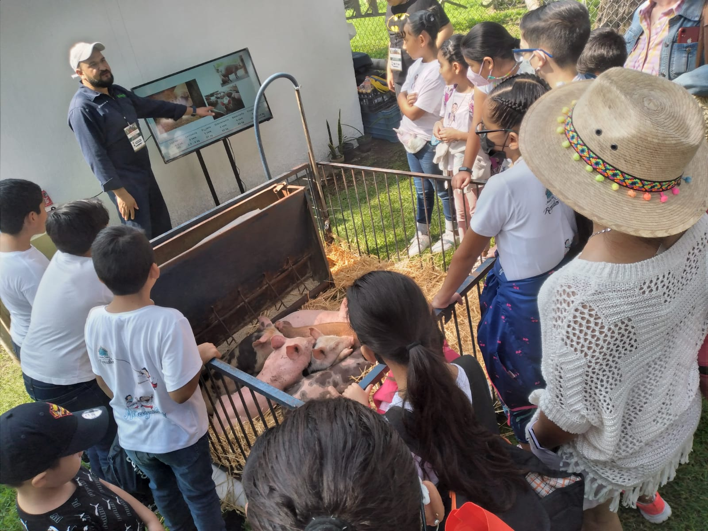
INIFAP outreach demonstration, introducing children to the swine production process for obtaining high-quality pork.
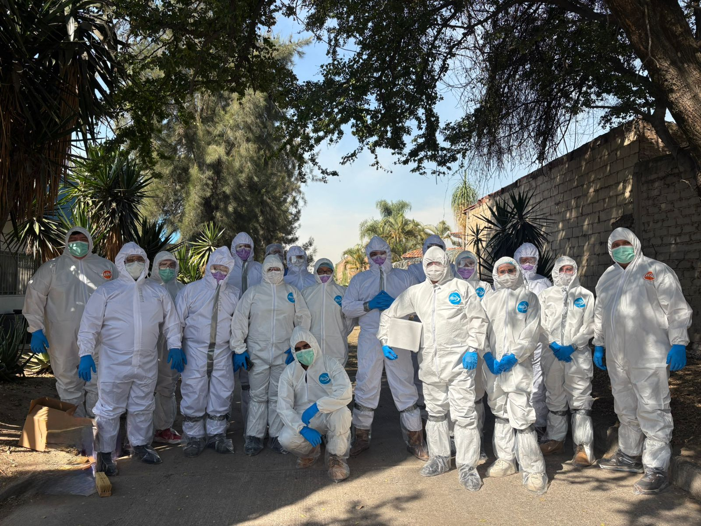
Training on response to swine “red disease” reports within passive epidemiological surveillance, with emphasis on African Swine Fever. PROCINORTE 2026.
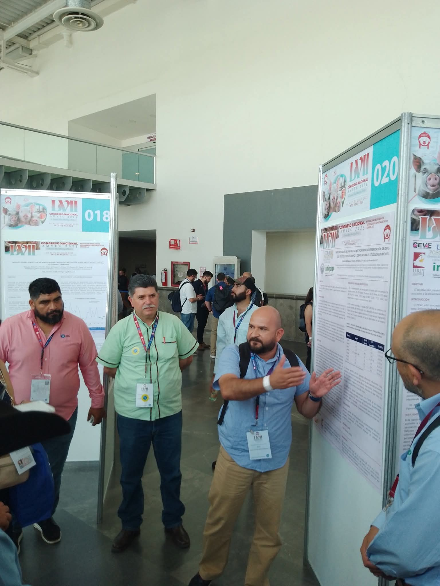
AMVEC Congress Veracruz 2025. Poster presentation on the genetic diversity of Porcine Reproductive and Respiratory Syndrome in Jalisco.
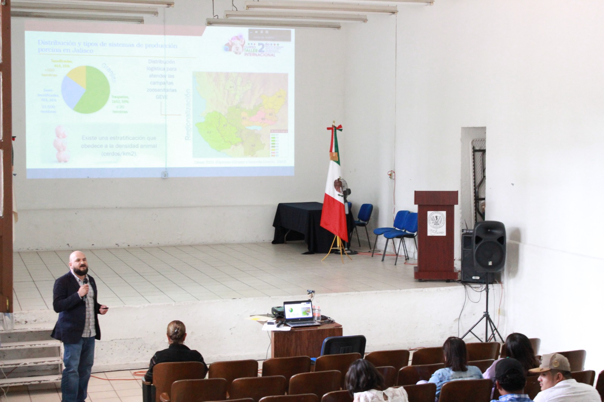
Conference on Porcine Circovirus type 2. 2nd International Workshop: Major viral diseases in swine and their impact on the pork industry.
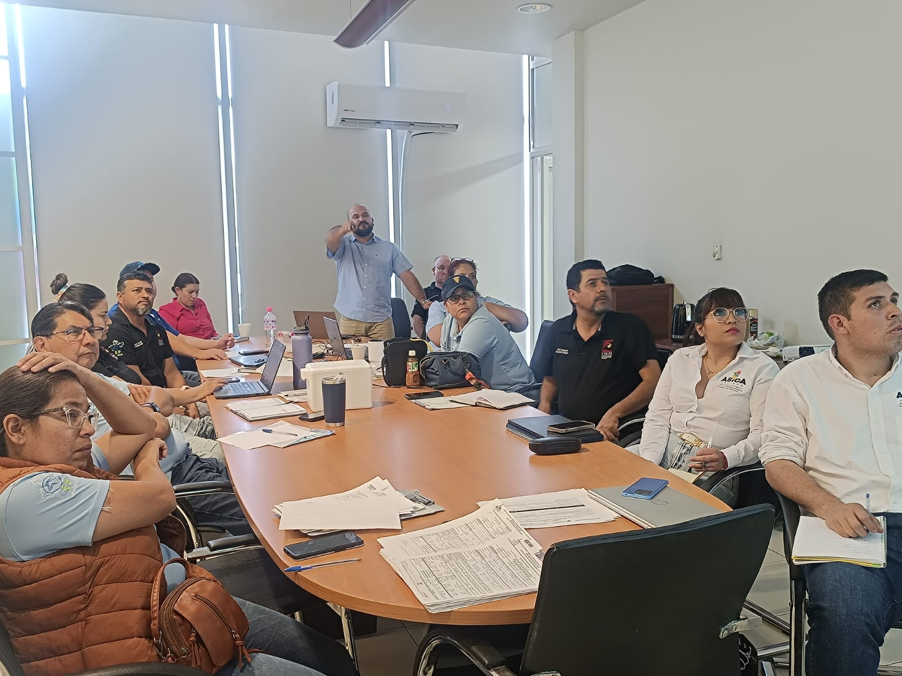
Training delivered to the State Epidemiological Surveillance Group (GEVE) on risk factors associated with Porcine Reproductive and Respiratory Syndrome and Porcine Circovirus type 2.
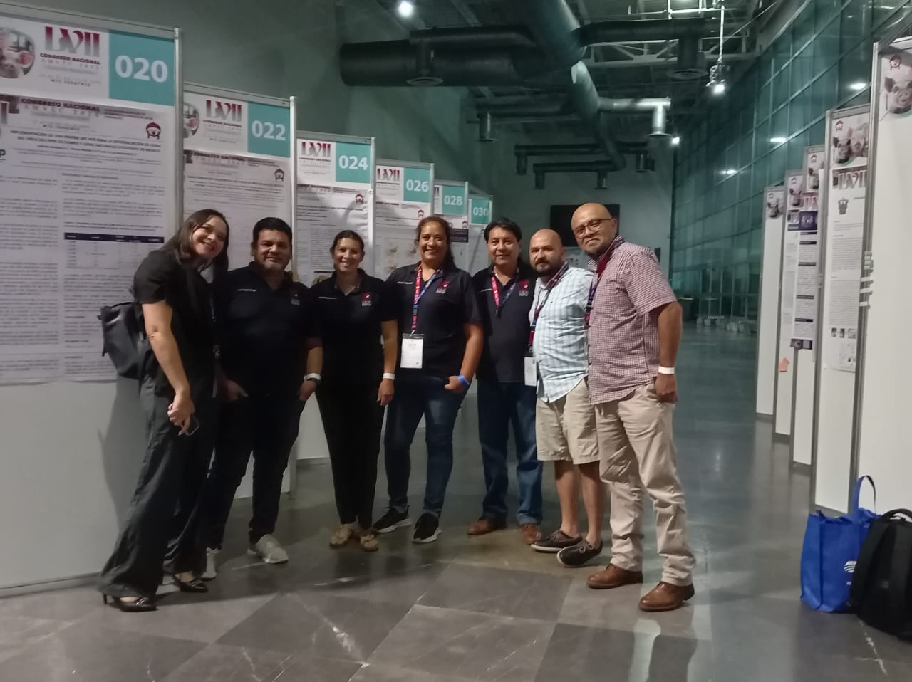
Research team at the poster session, AMVEC Congress Veracruz 2025.
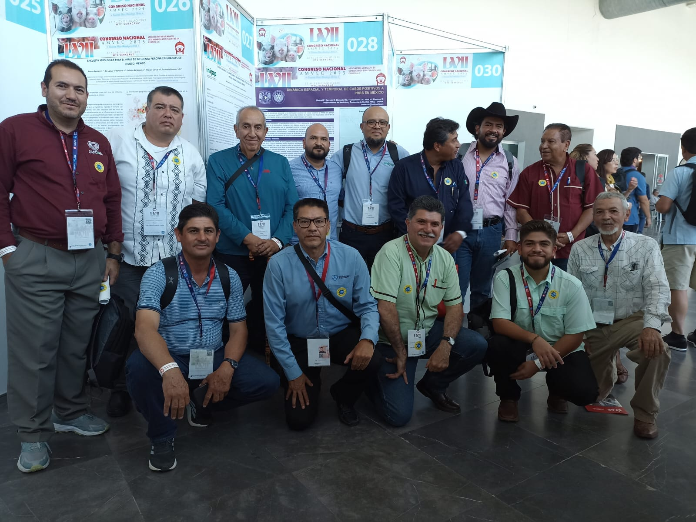
Engagement with veterinarians from the Asociación de Médicos Veterinarios Especialistas en Cerdos de Occidente (AMVECO) at the AMVEC Congress Veracruz 2025.
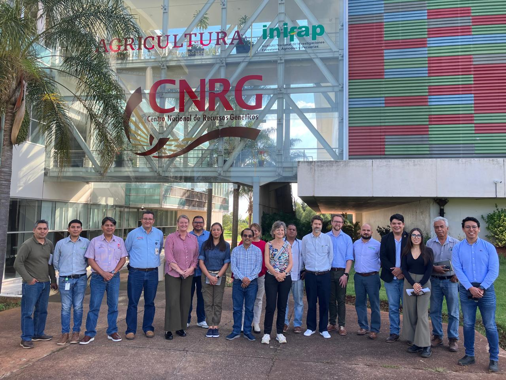
Participation in project presentations on Porcine Reproductive and Respiratory Syndrome and Porcine Circovirus type 2 before the Agricultural Commission of Denmark, contributing to the development of a traceability framework for the Mexican swine industry. Centro Nacional de Recursos Genéticos, CNRG-INIFAP.
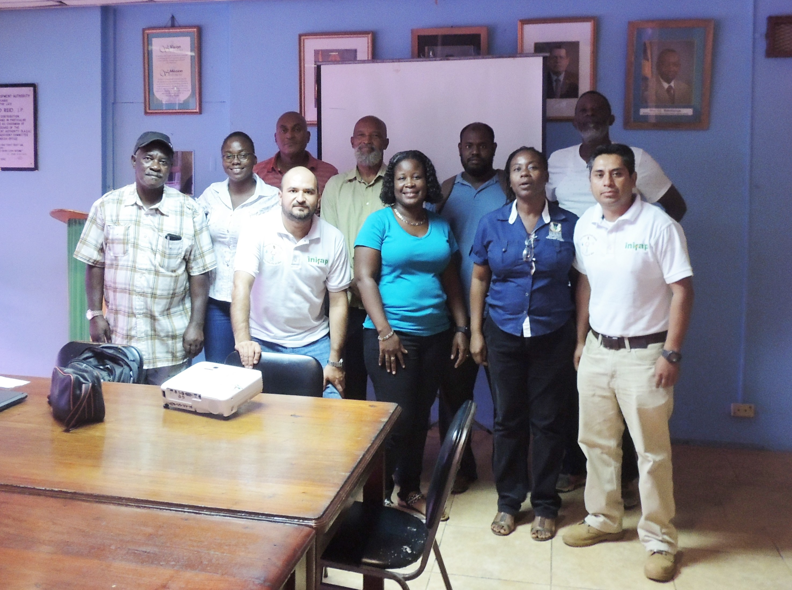
Training delivered as a Mexican expert to researchers, technicians, and producers in Kingston through an international cooperation initiative between Agencia Mexicana de Cooperación Internacional para el Desarrollo (AMEXCID) and Rural Agricultural Development Authority (RADA).